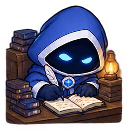

Генерация нарратива
Собери историю из правил: герой, цель, препятствие, помощник, ложный след и развязка — с графом и журналом решений.
Пример истории
Граф истории
Нажмите на узел, чтобы выбрать его и заменить.